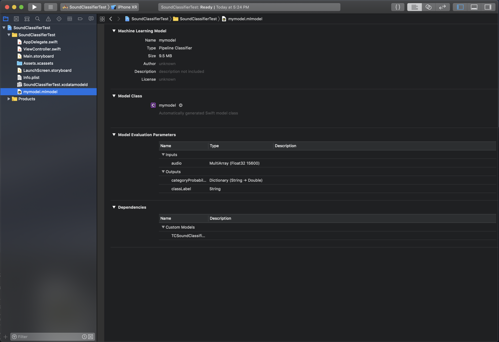

Deployment to Core ML
Note: This functionality is only available on iOS 12+ and macOS 10.14+
The Turi Create Sound Classifier Models are also available for use in
your iOS/macOS apps via exporting to Core ML. The exported Core ML model
will be a PipelineClassifier containing a model for each of the
three stages (see the How it works section for more details about the stages).
After creating your model in Turi Create, export it to Core ML format by calling export_coreml method as follows:
my_sound_classifier.export_coreml("my_sound_classifier.mlmodel")Then drag and drop the resulting mlmodel file into your Xcode project. It should look something like this: 
Before you can use the model you must download
libAudioPreprocessing.dylib. This is file is needed for the signal
preprocessing stage, which is implemented as a Core ML custom model.
The libAudioPreprocessing.dylib file can be found on the
Github releases page.
Once you've downloaded that file, drag and drop it into your Xcode project.
The dialog box should look like:

If your project will be submitted to the App Store you will need to package the libAudioPreprocessing.dylib into a Framework in order to avoid an iTunes Connect error. To package the framework properly, follow these steps.
Now, do the following:
- Under Project > Build Phases, add
libAudioPreprocessing.dylibto Copy Bundle Resources - Under Project > General, add
libAudioPreprocessing.dylibto Embedded Binaries and to Linked Frameworks and Libraries
Note: if you've packaged the .dylib into a Framework you'll need to perform these steps using the Framework instead of the dylib.
Now you are ready to start using your model. To create an instance of your model simply do the following:
let model = my_sound_classifier()The input to this model is an MLMultiArray of length 15,600 this is
975ms of data at a sample rate of 16K per second (.975 * 16,000 = 15,600).
The input must also only be one channel (i.e. mono not stereo). It is
important that the input to the model be 15,600 elements of one channel
data at a 16k sample rate. In the case we have less than one window of data or
have some remainder we pad with silence.
In order get predictions from your model, you will need to chuck your
data into the correct size. You will also need to import both CoreML
and AVFoundation.
Below is an example of doing that:
// Read wav file
var wav_file:AVAudioFile!
do {
let fileUrl = URL(fileReferenceLiteralResourceName: "<path to wav file>")
wav_file = try AVAudioFile(forReading:fileUrl)
} catch {
fatalError("Could not open wav file.")
}
print("wav file length: \(wav_file.length)")
assert(wav_file.fileFormat.sampleRate==16000.0, "Sample rate is not right!")
let buffer = AVAudioPCMBuffer(pcmFormat: wav_file.processingFormat,
frameCapacity: UInt32(wav_file.length))
do {
try wav_file.read(into:buffer!)
} catch{
fatalError("Error reading buffer.")
}
guard let bufferData = try buffer?.floatChannelData else {
fatalError("Can not get a float handle to buffer")
}
// Chunk data and set to CoreML model
let windowSize = 15600
guard let audioData = try? MLMultiArray(shape:[windowSize as NSNumber],
dataType:MLMultiArrayDataType.float32)
else {
fatalError("Can not create MLMultiArray")
}
var results = [Dictionary<String, Double>]()
let frameLength = Int(buffer.frameLength)
var audioDataIndex = 0
// Iterate over all the samples, chunking calls to analyze every 15600
for i in 0..<frameLength {
audioData[audioDataIndex] = NSNumber.init(value: bufferData[0][i])
if audioDataIndex >= windowSize {
let modelInput = my_sound_classifierInput(audio: audioData)
guard let modelOutput = try? model.prediction(input: modelInput) else {
fatalError("Error calling predict")
}
results.append(modelOutput.categoryProbability)
audioDataIndex = 0
} else {
audioDataIndex += 1
}
}
// Handle remainder by passing with zero
if audioDataIndex > 0 {
for audioDataIndex in audioDataIndex...windowSize {
audioData[audioDataIndex] = 0
}
let modelInput = my_sound_classifierInput(audio: audioData)
guard let modelOutput = try? model.prediction(input: modelInput) else {
fatalError("Error calling predict")
}
results.append(modelOutput.categoryProbability)
}
Once all window predictions are saved, to generate the overall prediction, calculate the mean across all prediction windows:
// Average model results from each chunk
var prob_sums = Dictionary<String, Double>()
for r in results {
for (label, prob) in r {
prob_sums[label] = (prob_sums[label] ?? 0) + prob
}
}
var max_sum = 0.0
var max_sum_label = ""
for (label, sum) in prob_sums {
if sum > max_sum {
max_sum = sum
max_sum_label = label
}
}
let most_probable_label = max_sum_label
let probability = max_sum / Double(results.count)
print("\(most_probable_label) predicted, with probability: \(probability)")